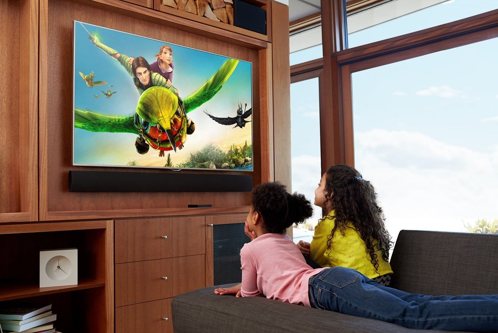
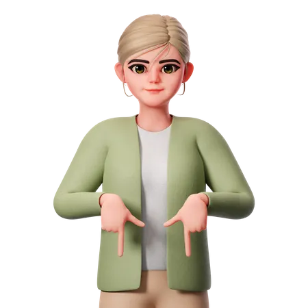
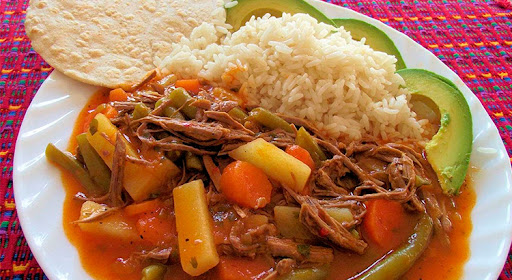

Mis Hobbies



Mi hoja de vida personal
Soy Aide Orozco, tengo 13 años y soy de Flores Costa Cuca. Me encanta hablar con personas adultas, los animales como perros y gatos, y disfrutar bocadillos. Me gusta conocer lugares agradables, ver caricaturas, telenovelas y escuchar música.

